Zakładam, że znasz przeczytałeś(łaś) Sekcję 1 i dobrze rozumiesz, na czym polega niestandardowy układ. Przede wszystkim należy wyjaśnić, że szukamy niestandardowych układów wśród zleceń produkcyjnych, a tuż po tym, jak planowane zlecenia zostaną przekonwertowane na produkcję. Czy możemy to sprawdzić, póki zamówienia sprzedaży są jeszcze w fazie planowania? Tak, ale to nie ma większego sensu. Dlaczego w zleceniach produkcyjnych, a zaraz po konwersji? Ponieważ chcemy zmienić sieć zamówień, dodając nowe części (adaptery i nogi), a to jest możliwe tylko w przypadku zlecenia produkcyjnego. A druga część, dlaczego zaraz po konwersji – ponieważ chcemy to zrobić przed rozpoczęciem produkcji, a nawet przed utworzeniem zleceń zbiorczych, aby na komisyjnych listach pojawiły się wszystkie części, które zamierzamy dodać.
Gdzie sprawdzamy?
Istnieje niestandardowa transakcja, która bardzo pomaga, ponieważ gromadzi wszystko, czego potrzebujemy, w jednym miejscu - ZCONF_AUSF_VIEW
Dla nerdów
ZCONF_AUSF_VIEW -> Z – transakcja niestandardowa -> AUSF – z niemieckiego ausfuehrung – wykonanie -> CONF – konfiguracja -> VIEW – widok Połącz to wszystko, a otrzymasz transakcję umożliwiającą wyświetlenie konfiguracji wykonania zamówienia sprzedaży
Przyjrzyjmy się bliżej, co dokładnie należy zrobić w ZCONF_AUSF_VIEW
Po wprowadzeniu transakcji pojawi się takie okno
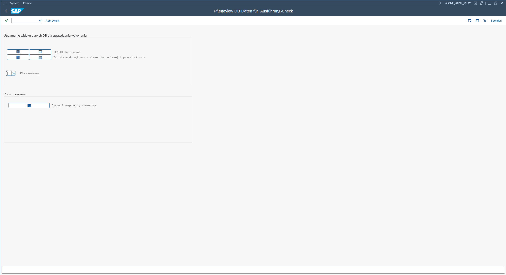
Najpierw przyjrzyjmy się elementom interfejsu użytkownika i temu, do czego one prowadzą
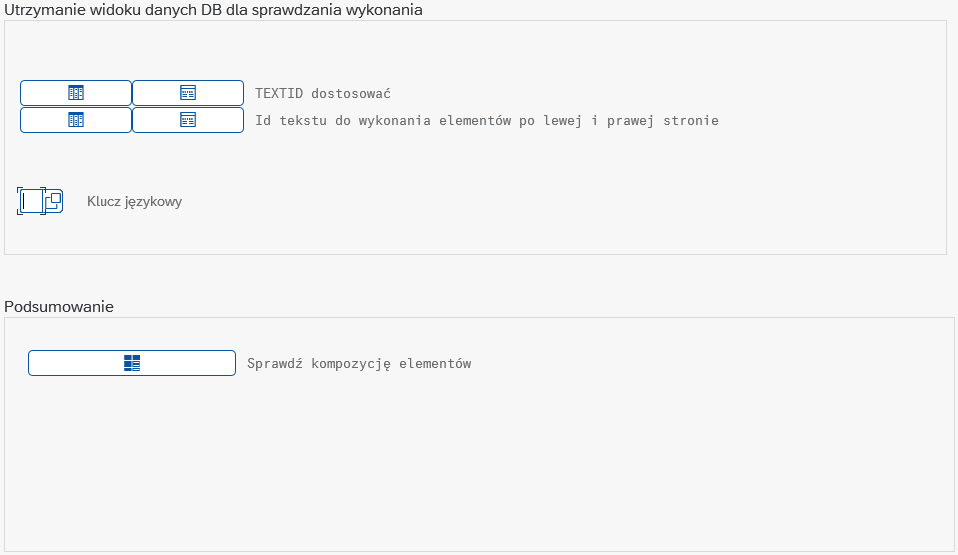
W górnym bloku znajdują się dwa rzędy przycisków, z których tak naprawdę potrzebujesz tylko dolnego rzędu i tylko wtedy, gdy znajdziesz układ, który powinien być oznaczony jako niestandardowy, ale nie jest tak oznaczony lub wręcz przeciwnie, oznaczony jako niestandardowy, choć tak naprawdę nie powinno tak być (ludzie popełniają błędy). Pierwszy przycisk od lewej strony prowadzi tylko do widoku tabeli dla każdej pary elementów zdefiniowanych jako niestandardowe (istnieją również pojedyncze elementy zdefiniowane jako układy niestandardowe).
Drugi, najbardziej prawy przycisk prowadzi do edycji tabeli układów niestandardowych, gdzie można zdefiniować nowy układ niestandardowy lub usunąć istniejący.
Jak wygląda proces edycji?
Po kliknięciu przycisku edycji tabeli pojawi się okno dialogowe:
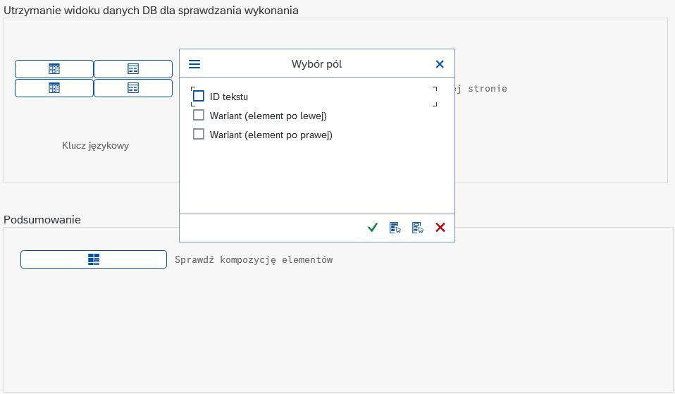
Zaznacz wszystkie opcje i naciśnij przycisk wyboru
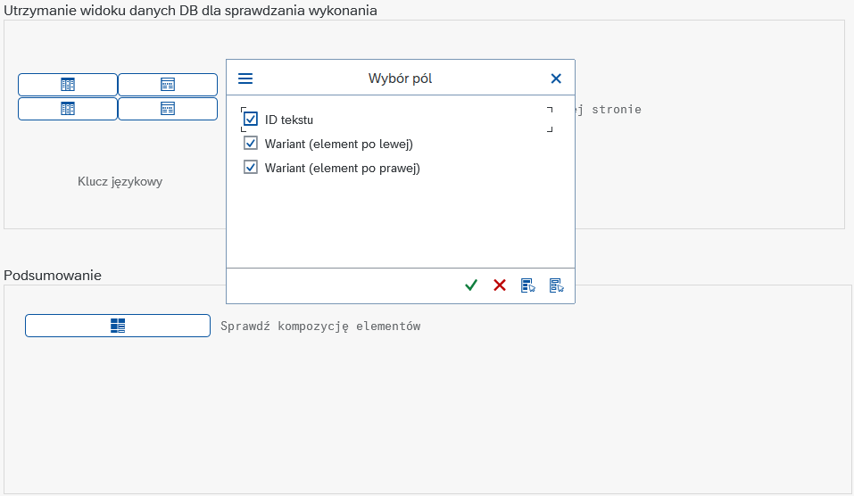
Pojawi się kolejne okno dialogowe – wystarczy nacisnąć przycisk wyboru, aby wyświetlić tabelę
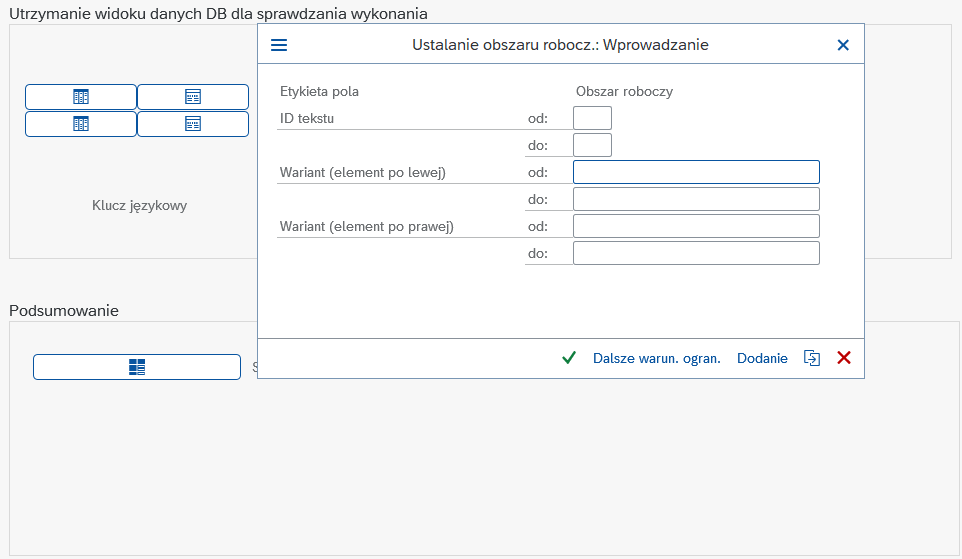
I na koniec zobaczysz tę tabelę. Aby dodać nowe wpisy, wystarczy nacisnąć „Nowe wpisy”
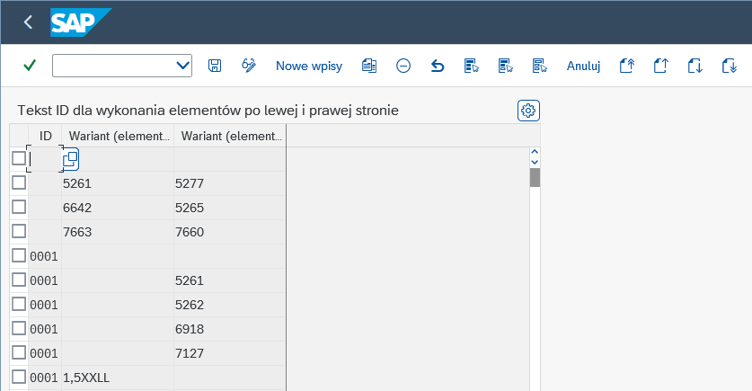
Obecne okno zmieni wygląd na taki, teraz wszystkie komórki będą białe, co oznacza, że teraz można je edytować
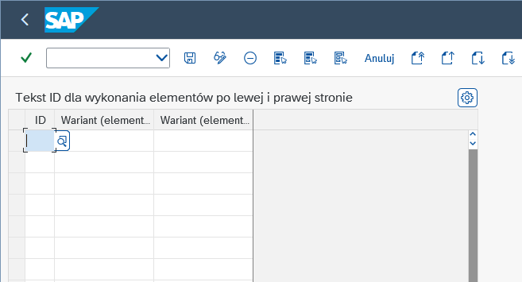
Aby faktycznie edytować potrzebujesz 3 rzeczy. Pierwsza to ID, druga i trzecia to kody Ausfuehrung. Brzmi groźnie, prawda? Nie ma się czym martwić, bo to w rzeczywistości całkiem proste. ID zawsze powinno być ustawione na 0001. Teraz Ausfuehrung, który możesz pobrać z kodu KMAT – to drugie cztery cyfry. Zobaczmy to na przykładzie 1.5STAhoR Antaris:
Pamiętaj, że definiując parę, musisz wiedzieć, po której stronie ma się znaleźć który element.
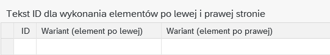
Jeśli kiedykolwiek będziesz musiał(a) dodać pojedynczy element i zdefiniować go jako układ niestandardowy, możesz to zrobić, po prostu wprowadzając tylko jeden kod AUSF.
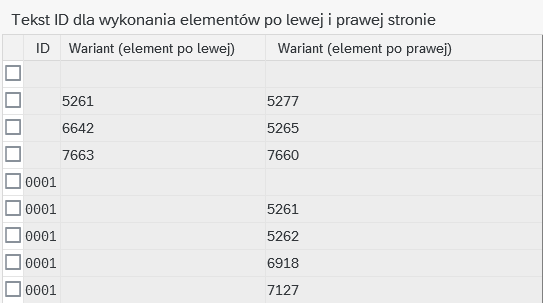
Możesz również usunąć, po prostu zaznacz linię i naciśnij „Usuń”
1. Naciśnij ten przycisk, aby podświetlić linię
2. Naciśnij ten przycisk, aby usunąć linię
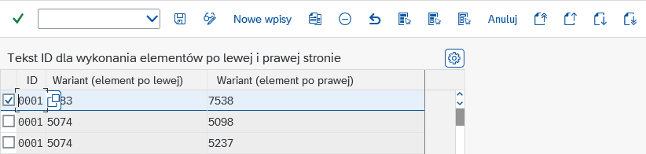
Na koniec, po dodaniu lub usunięciu pary, naciśnij Ctrl + S, aby zapisać zmiany.
Dolny blok to miejsce, w którym znajduje się tylko jeden przycisk prowadzący do faktycznego sprawdzenia. Przyjrzyjmy się bliżej temu procesowi. Najpierw naciśnij przycisk „Bericht”(1) (Bericht z języka niemieckiego - raport)
Teraz należy wprowadzić zakład, datę (data dostępności materiału - data, na którą zostały przekonwertowane zlecenia planowane) i nacisnąć F8
(04.09.2026 data przykładowa)
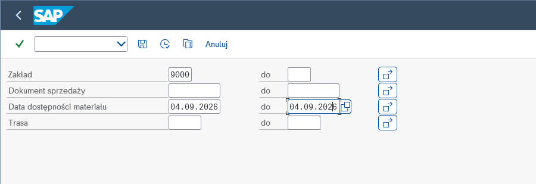
Po naciśnięciu klawisza F8 SAP przeanalizuje tabele bazowe, zbierze wszystkie dane i wypełni listę, ale będzie chaos, więc uporządkujmy to. W tym celu stworzyłem układ - /9000_read_ready (read ready—gotowy do odczytu).
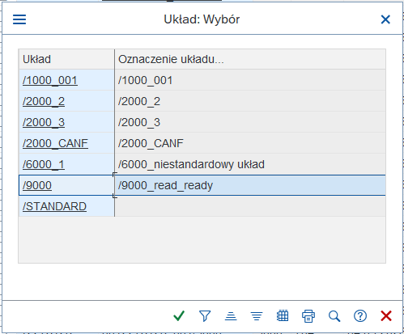
Układ zaprojektowano tak, aby wszystkie niestandardowe układy znalazły się na górze (choć warto przeskanować resztę, ponieważ może tam nie być oznaczone niestandardowe układy. Mały spoiler — stanem na dzisiaj, 08.07.2026 r., nowa funkcja arkusza kalkulacyjnego jest w fazie rozwoju i umożliwi Ci ona proste wklejenie listy z ZCONF_AUSF_VIEW, a następnie program znajdzie wszystkie niestandardowe układy i uporządkuje je ładnie w arkuszu kalkulacyjnym).
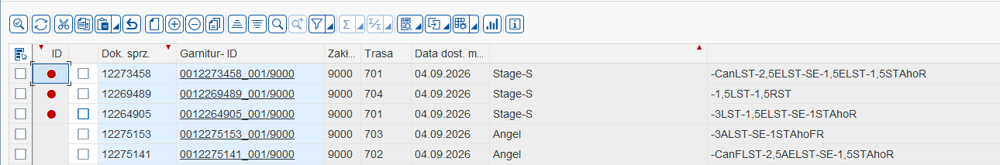
Masz już listę. Co teraz? Umieść kursor w pierwszym wierszu, a konkretnie w komórce „Dok. sprz.” i przeciągnij do ostatniej komórki w wierszu, a także w dół, ile jest niestandardowych układów.
Naciśnij Ctrl + C, aby skopiować
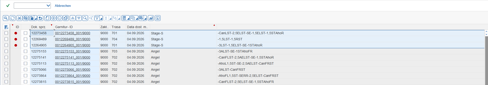